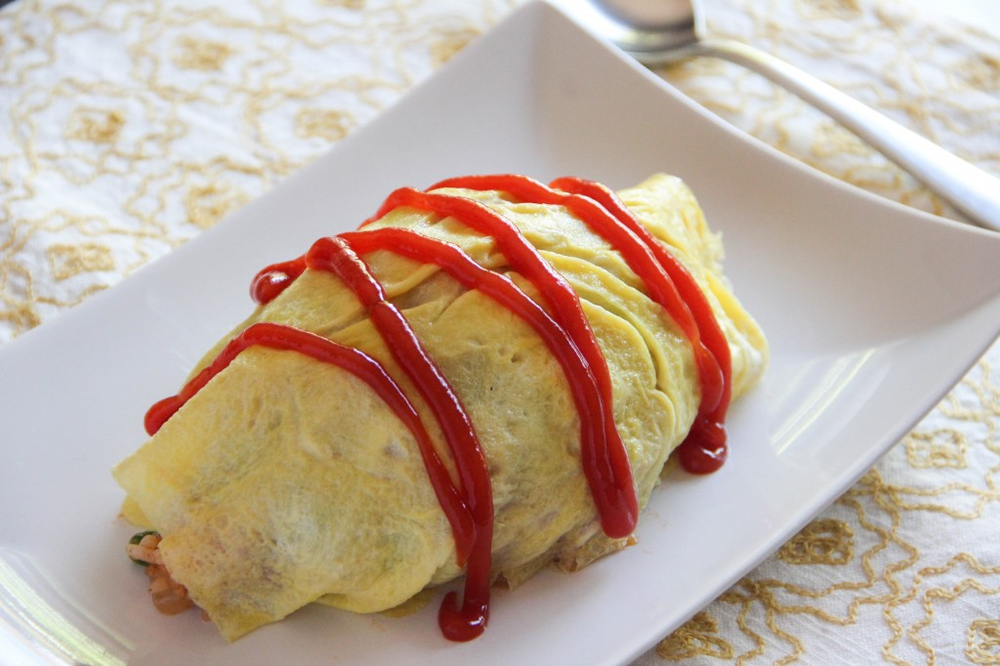

Home
Omurice

Description
Omurice (オムライス), short for “omelet rice,” is a dish made of ketchup-flavored fried rice wrapped in a thin, crepe-like egg. It’s a type of yōshoku—Western-style cuisine developed in Japan—and was first created in the early 1900s. For over 100 years, it’s been a favorite comfort food in Japan, especially loved by kids!
Ingredients
- 1 chicken thigh
- 1 small onion
- 1 Tbsp butter
- 1 tsp oil
- 2 cups cooked rice
- 1/4 tsp salt
- pepper
- 3 Tbsp ketchup
- 1/4 cup frozen green peas
Steps
- Cut chicken thigh into 1″ pieces. Cut onion finely.
- Melt butter and add oil in a frying pan at medium heat. Add chicken and cook for 1-2 minutes. Add onion and cook until onion becomes translucent.
- Add cooked rice and cook mixing for 2 minutes. Season rice with salt and pepper. Make room in the frying pan and add ketchup. Cook only ketchup for 30 seconds to cook it down. Mix rice and ketchup and fry together for 1-2 minutes. Then add frozen peas and cook some more.
- Place half of the ketchup rice into a rice bowl or similar kind of bowl, pack lightly, and unmold on a plate. Make another one.
- Beat eggs and a pinch of salt together. Heat frying pan with 1/2 tsp oil. Pour 1/2 of egg mixture onto hot frying pan and make a crepe-like thin round egg sheet. Cover molded rice with egg sheet to form an oval shape. Repeat one more time.